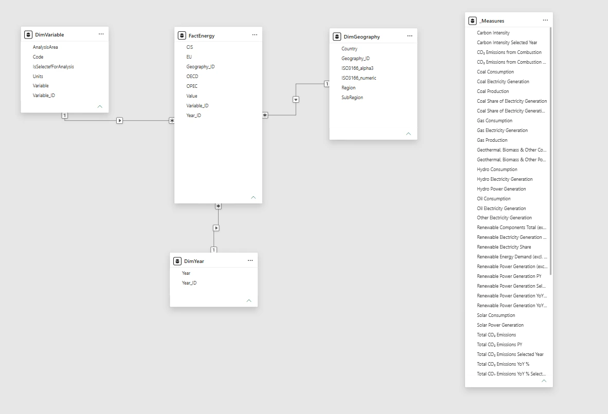

Poland Energy Transition Analysis
Analiza transformacji energetycznej Polski na podstawie danych Energy Institute, z porównaniem do UE i świata.
Analysis of Poland’s energy transition using Energy Institute data, with EU and world benchmarks.
Najważniejsze liczby
Key figures
Galeria raportu
Report gallery
Wybierz stronę i kliknij obraz, aby go powiększyć. To statyczne zrzuty ekranu, nie raport z aktywnymi filtrami.
Choose a page and click the image to enlarge it. These are static screenshots, not a live filterable report.
Cele biznesowe i dane
Business objectives & data
Analiza zmian podaży i zużycia energii, miksu elektroenergetycznego, OZE oraz emisji CO₂ w latach 1965–2025. Polska ma obserwacje dla 61 zmiennych. Agregaty Total EU i Total World służą jako punkty odniesienia.
Analysis of energy supply and consumption, electricity mix, renewables and CO₂ emissions from 1965 to 2025. Poland has observations for 61 variables. Total EU and Total World serve as benchmarks.
Przygotowanie i model danych
Data preparation & modelling
Standaryzacja danych w Power Query. Model gwiazdy: FactEnergy, DimGeography, DimVariable, DimYear oraz odrębna tabela _Measures. Jednostki są atrybutami DimVariable; aktywne relacje 1:* filtrują tabelę faktów.
Standardisation in Power Query. Star schema: FactEnergy, DimGeography, DimVariable, DimYear and a dedicated _Measures table. Units are DimVariable attributes; active one-to-many relationships filter the fact table.

Wnioski i ograniczenia
Insights & limitations
W 2025 r. podaż energii wynosi 3,92 EJ, produkcja energii elektrycznej 179,18 TWh, a udział węgla 51,13%. Produkcja energii odnawialnej bez hydroenergii wynosi 56,26 TWh. Całkowite emisje CO₂ wynoszą 290,12 Mt.
In 2025, total energy supply is 3.92 EJ, electricity generation is 179.18 TWh and coal accounts for 51.13%. Renewable power generation excluding hydro is 56.26 TWh. Total CO₂ emissions are 290.12 Mt.
Anomalia źródłowa z 1975 r. (0,34 EJ) pozostaje w danych; jedynie wykres dynamiki YoY pomija lata 1975–1976. Carbon Intensity to wskaźnik źródłowy emisji ze spalania na jednostkę podaży energii. Braki historyczne nie oznaczają zer. Porównanie miksu zużycia normalizuje udziały wybranych źródeł.
The 1975 source anomaly (0.34 EJ) is retained; only the YoY chart suppresses 1975–1976. Carbon intensity is a source-provided combustion emissions indicator per unit of energy supply. Missing historical coverage does not imply zero. Consumption mix shares are normalised over selected sources.